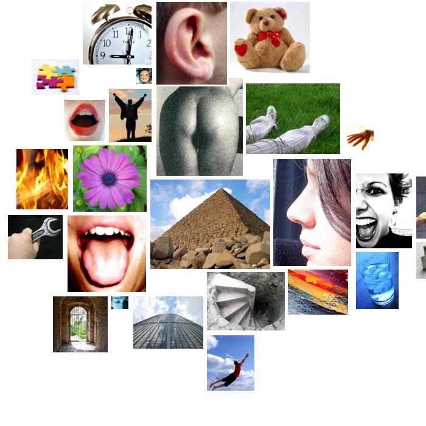
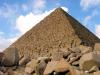

kennedy.txt
  timelessness
centuries, enduring, century, centuries, centuries
 anality
anality pollution's, soil
 odor
odor breathe, breathe
 passivity
passivity retired, rest, safe, security, secure, security, safe, security, security, security, die, quiet, hushed, silence, submission, rests, securely, yield
taste
sources, sweetheart
 affection
affection welcome, welcome, kindled, welcome, welcome, like, like, love, like, favors, cherished, like, cherish, friend, kind, like, like, like, favoritism, like, sweetheart, familiar, loved
 sound
sound voices, heard, heard, hearts, voices, unheard, ring, hearts, hear, echoes, hear
 general_sensation
general_sensation fairness, fairer, fair, attention, beautiful
 depth
depth deep, under, under, under, under, depths, roots, deep
 anxiety
anxiety fear, terrorism, terrorism, cares, fear, fear, fear, fear, fear, fear, fear, fear, fear, fear, fear, fear, terrorism, fear
 temporal_references
temporal_references time, everywhere, tonight, yearn, then, every, old, old, old, old, today, now, past, today, when, when, when, every, years, ago, today, today, years, once, once, soon, time, time, times, times, when, when, today, already, again, yearning, again, time, again, when, years, when, when, ever, when, sometimes, years, ever, again, decades, every, every, time, years, when, today, years, everyone, old, sometimes, sometimes, decades, ago, sometimes, sometimes, now, often, time, past, again, again, again, once, today, past, again, once
 height
height high, planet, top, hungry, higher, higher, above, heaven, roof, higher, highest
 moral_imperative
moral_imperative privileged, right, rightfully, justice, right, should, honored, should, should, honored, principle, respect, respect, justice, rights, rights, rights, rights, right, right, should, honest, right, right, justice, right
 fire
fire kindled, fire, fired, burning, fireplace
 brink-passage
brink-passage avenue, hallowed, street, steps, wall, road, halliburton, borders, doors
 expressive_behavior
expressive_behavior sang, cries, poet's
 descent
descent fellow, fellow, fell, diversity, burial, fellow
cold
north, winters, cold
 instrumental_behavior
instrumental_behavior make, making, founded, belongs, earned, count, work, reach, make, founders, goals, reach, make, achieved, claims, try, win, win, goal, make, achieving, building, works, skill, won, founders, paid, price, making, win, reach, make, affordable, workplace, jobs, pay, working, works, make, soldier, task, costs, pay, works, find, find, won, won, won, selma, won, win, make, claimed, founders, use, use, use, find, use, build, make
 glory
glory pride, golden, great-grandparents, great, great, conquer, wealth, greatest, greatest, great, scorned, principle, golden, great, hero, greater, magnificent, victory, golden, crown, noblest
 order
order system, system, divide, divider, divide, divided, form, simple, simple, simple, constant
 orality
orality tea, feeds, hungry, dining
 abstraction
abstraction ideals, ideals, ideals, mistake, them, ideals, ideals, history's, history, learn, themselves, quality, knew, know, choose, ideals, them, ideals, fact, know, determined, important, consequences, choice, them, belief, reason, why, know, believe, different, idea, believe, believe, diversity, analysis, basic, planet, defines, know, judgment, opinions, real, possibly, knows, history, cause, know, history, ideals, them, may, true, know, know, ideals, known, known, history, understands, sources, ideas, knows, true, real, true, planted, them, something, themselves, cause, cause, them, them, them, true, ideals, truly
 touch
touch sharp
 positive_affect
positive_affect happy, enjoyed, gays
 consciousness_alteration
consciousness_alteration visionary, dreams, dream